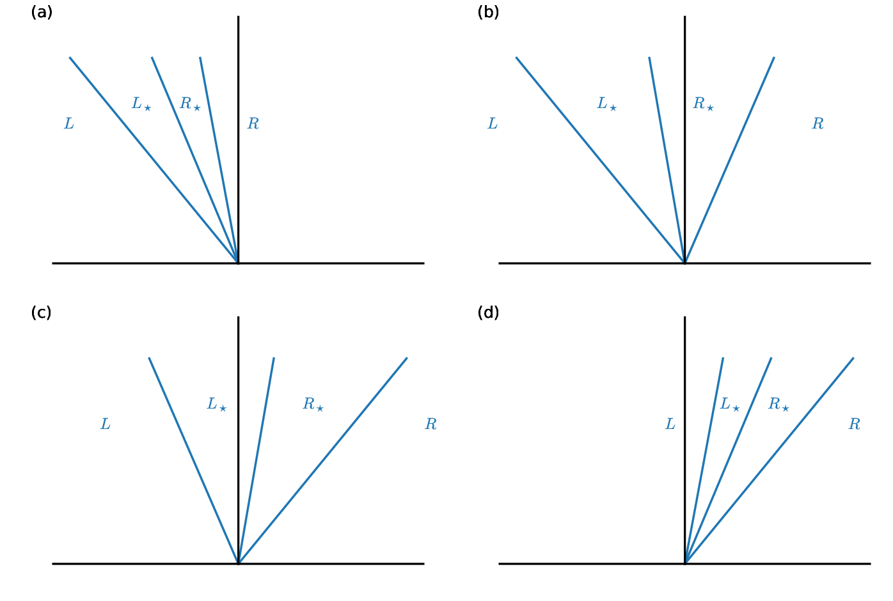
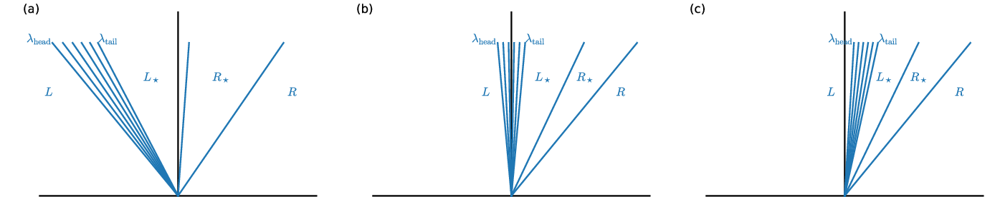

Sampling the Riemann solution
Contents
import matplotlib.pyplot as plt
import numpy as np
import scipy.optimize as optimize
Sampling the Riemann solution#
Once we have the star state, we need to know which state is on the interface of our cells&mdash%that is the state that we will use to evaluate the fluxes through the interface.
To determine that state we need to know how fast each of the three waves are moving (and in which direction) and then we simply look for which state is left behind on the interface by the waves moving away from it.

We also know the following about the wave structure:
The middle wave is always a contact discontinuity. Pressure and velocity are constant across it
The left and right waves are either a shock or rarefaction
Rarefaction:
Entropy is constant across the wave
Riemann invariants tell us how to connect the solution across the wave to the star region
Shock:
Must be dissipative—entropy is not conserved
Jump conditions tell us how to connect to the star state across the shock
Consider the following 4 cases:

Cases (a) and (d) represent supersonic flow to the left or right—all 3 waves are on one side of the interface.
For case (a), all 3 waves are to the left of the interface, so state \(R\) is on the interface.
For case (d) is similar, all 3 waves are to the right of the interface, so state \(L\) is on the interface.
In cases (b) and (c), one the “\(+\)” and “\(-\)” waves are on either side of the interface and the only difference is the center (”\(0\)”) wave, or contact discontinuity. So we would determine which of the star states is on the interface based on the sign of the contact discontinuity’s speed.
For case (b), the contact is moving to the left so \(R_\star\) state is on the interface
For case (c), the contact is moving to the right, so the \(L_\star\) state is on the interface.
Wave speeds#
Shock case#
For a shock, the speed of the shock comes from the Rankine-Hugoniot conditions.
For the left wave, the shock speed is:
For the right wave, it is:
Contact discontinuity#
A contact discontinuity propagates in the star region, and the velocity there is \(u_\star\) and is constant in that region, so the contact just propagates at this speed:
Rarefaction#
A rarefaction is subsonic, but it is spread out (it is not a discontinuity). We call the leading part the “head” and the trailing part the “tail”. The head and tail move at different speeds, just \(u \pm c\) corresponding to the region they abut.
For a left rarefaction:
For a right rarefaction:
Note that \(|S_\mathrm{head}| > |S_\mathrm{tail}|\), so the rarefaction spreads out over time.
Also, it is possible for the rarefaction to span the interface—with the head on one side and the tail on the other. We’ll deal with this shortly.
Density#
To compute the rarefaction speed, we need to know the density in the star state (so we can evaluate \(c_\star\)). We will need this anyway for either a shock or a rarefaction to compute the final fluxes if a star state is on the interface.
For a rarefaction, since entropy is constant, we have:
where \(s \in {L, R}\) is the state outside of the star region.
For a shock, the jump conditions tell us the density:
Sampling#
The sampling procedure is the following:
Look at the sign of the contact speed, \(S_0\):
If \(S_0 > 0\) then we are either in the \(L\) or \(L_\star\) state
Look at the speed of the left shock or rarefaction to determine if we are in the \(L\) or \(L_\star\) state
If \(S_0 < 0\) then we are either in the \(R\) or \(R_\star\) state
Look at the speed of the right shock or rarefaction to determine if we are in the \(R\) or \(R_\star\) state
The one catch is when the rarefaction spans the interface, e.g., \(S_\mathrm{head} < 0 < S_\mathrm{tail}\) for a left rarefaction.

In this case, we would use the Riemann invariant to find the state at the location of the interface inside the structure of the rarefaction.
Implementation#
Here we extend our RiemannProblem class to add methods to find the solution if we are a shock or rarefaction and to do the sampling:
class State:
""" a simple object to hold a primitive variable state """
def __init__(self, p=1.0, u=0.0, rho=1.0):
self.p = p
self.u = u
self.rho = rho
def __str__(self):
return f"rho: {self.rho}; u: {self.u}; p: {self.p}"
class RiemannProblem:
""" a class to define a Riemann problem. It takes a left
and right state. Note: we assume a constant gamma """
def __init__(self, left_state, right_state, gamma=1.4):
self.left = left_state
self.right = right_state
self.gamma = gamma
self.ustar = None
self.pstar = None
def __str__(self):
return f"pstar = {self.pstar}, ustar = {self.ustar}"
def u_hugoniot(self, p, side):
"""define the Hugoniot curve, u(p)."""
if side == "left":
state = self.left
s = 1.0
elif side == "right":
state = self.right
s = -1.0
c = np.sqrt(self.gamma*state.p/state.rho)
if p < state.p:
# rarefaction
u = state.u + s*(2.0*c/(self.gamma-1.0))* \
(1.0 - (p/state.p)**((self.gamma-1.0)/(2.0*self.gamma)))
else:
# shock
beta = (self.gamma+1.0)/(self.gamma-1.0)
u = state.u + s*(2.0*c/np.sqrt(2.0*self.gamma*(self.gamma-1.0)))* \
(1.0 - p/state.p)/np.sqrt(1.0 + beta*p/state.p)
return u
def find_star_state(self, p_min=0.001, p_max=1000.0):
""" root find the Hugoniot curve to find ustar, pstar """
# we need to root-find on
self.pstar = optimize.brentq(
lambda p: self.u_hugoniot(p, "left") - self.u_hugoniot(p, "right"),
p_min, p_max)
self.ustar = self.u_hugoniot(self.pstar, "left")
def shock_solution(self, sgn, state):
"""return the interface solution considering a shock"""
p_ratio = self.pstar/state.p
c = np.sqrt(self.gamma*state.p/state.rho)
# Toro, eq. 4.52 / 4.59
S = state.u + sgn*c*np.sqrt(0.5*(self.gamma + 1.0)/self.gamma*p_ratio +
0.5*(self.gamma - 1.0)/self.gamma)
# are we to the left or right of the shock?
if (self.ustar < 0 and S < 0) or (self.ustar > 0 and S > 0):
# R/L region
solution = state
else:
# * region -- get rhostar from Toro, eq. 4.50 / 4.57
gam_fac = (self.gamma - 1.0)/(self.gamma + 1.0)
rhostar = state.rho * (p_ratio + gam_fac)/(gam_fac * p_ratio + 1.0)
solution = State(rho=rhostar, u=self.ustar, p=self.pstar)
return solution
def rarefaction_solution(self, sgn, state):
"""return the interface solution considering a rarefaction wave"""
# find the speed of the head and tail of the rarefaction fan
# isentropic (Toro eq. 4.54 / 4.61)
p_ratio = self.pstar/state.p
c = np.sqrt(self.gamma*state.p/state.rho)
cstar = c*p_ratio**((self.gamma-1.0)/(2*self.gamma))
lambda_head = state.u + sgn*c
lambda_tail = self.ustar + sgn*cstar
gam_fac = (self.gamma - 1.0)/(self.gamma + 1.0)
if (sgn > 0 and lambda_head < 0) or (sgn < 0 and lambda_head > 0):
# R/L region
solution = state
elif (sgn > 0 and lambda_tail > 0) or (sgn < 0 and lambda_tail < 0):
# * region, we use the isentropic density (Toro 4.53 / 4.60)
solution = State(rho = state.rho*p_ratio**(1.0/self.gamma),
u = self.ustar, p = self.pstar)
else:
# we are in the fan -- Toro 4.56 / 4.63
rho = state.rho * (2/(self.gamma + 1.0) -
sgn*gam_fac*state.u/c)**(2.0/(self.gamma-1.0))
u = 2.0/(self.gamma + 1.0) * ( -sgn*c + 0.5*(self.gamma - 1.0)*state.u)
p = state.p * (2/(self.gamma + 1.0) -
sgn*gam_fac*state.u/c)**(2.0*self.gamma/(self.gamma-1.0))
solution = State(rho=rho, u=u, p=p)
return solution
def sample_solution(self):
"""given the star state (ustar, pstar), find the state on the interface"""
if self.ustar < 0:
# we are in the R* or R region
state = self.right
sgn = 1.0
else:
# we are in the L* or L region
state = self.left
sgn = -1.0
# is the non-contact wave a shock or rarefaction?
if self.pstar > state.p:
# compression! we are a shock
solution = self.shock_solution(sgn, state)
else:
# rarefaction
solution = self.rarefaction_solution(sgn, state)
return solution
left = State(p=1.0, u=0.0, rho=1.0)
right = State(p=0.1, u=0.0, rho=0.125)
rp = RiemannProblem(left, right)
rp.find_star_state()
interface_state = rp.sample_solution()
print(interface_state)
rho: 0.4263194281784952; u: 0.9274526200489498; p: 0.30313017805064685
Once we have the interface state, we can compute the conservative fluxes: